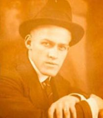

Bugs Bunny
Bugs Bunny is an animated cartoon character; created in 1940 by Leon Schlesinger Productions (later Warner Bros. Cartoons) and voiced originally by Mel Blanc. Bugs is best known for his starring roles in the Looney Tunes and Merrie Melodies series
of animated short films, produced by Warner Bros. during the golden age of American animation. His popularity during this era led to his becoming an American cultural icon, as well as the official mascot of Warner Bros. Entertainment. Bugs is
an anthropomorphic gray hare or rabbit who is famous for his flippant, insouciant personality; a Brooklyn accent; his portrayal as a trickster; and his catch phrase "Eh... What's up, doc?", usually spoken while chewing a carrot. Though a similar
rabbit character began appearing in the Warner Bros. cartoon shorts during the late 1930s, the definitive character of Bugs Bunny is widely credited to have made his debut in director Tex Avery's Oscar-nominated film A Wild Hare (1940). Since
his debut, Bugs has appeared in various short films, feature films, compilations, TV series, music records, comic books, video games, award shows, amusement park rides, and commercials. He has also appeared in more films than any other cartoon
character, is the ninth most-portrayed film personality in the world, and has his own star on the Hollywood Walk of Fame.

Ben Hardaway
Joseph Benson "Ben/Bugs" Hardaway (May 21, 1895 – February 5, 1957) was an American storyboard artist, animator, voice actor, gagman, writer and director for several American animation studios during The Golden Age of Hollywood animation. He was
sometimes credited as J. B. Hardaway, Ben Hardaway, Buggsy Hardaway and B. Hardaway. He started his animation career working for the Kansas City Film Ad Service. He later worked for the Walt Disney Animation Studios and the Ub Iwerks Studio. He
was hired by the Leon Schlesinger studio as a gagman for the Friz Freleng unit. He was promoted to director for seven Buddy animated shorts. Afterwards he resumed working as a gagman and storyman. Storymen started receiving film credits in 1937.
His writing credits include Daffy Duck and Egghead and The Penguin Parade. While at the Schlesinger/Warner Bros. studio during the late 1930s, Hardaway served as a storyman, and co-directed several Looney Tunes and Merrie Melodies shorts with
Cal Dalton during Friz Freleng's three-year exodus to MGM. Leon Schlesinger needed a replacement for Freleng, and Hardaway's previous experience in the job resulted in his promotion. In 1938, Hardaway co-directed Porky's Hare Hunt, the first film
to feature a rabbit. This as yet unnamed, embryonic rabbit was later named in an early model sheet as Bugs Bunny